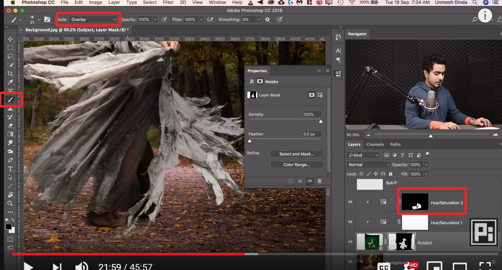

人像简单抠图及头发处理 in Photoshop
人像抠图是经常需要进行的操作，通过新版 Photoshop background erase tool 可以简单处理。
使用背景擦除工具处理头发，上方的设置区域，选择 discontinue:

人像抠图是经常需要进行的操作，通过新版 Photoshop background erase tool 可以简单处理。
使用背景擦除工具处理头发，上方的设置区域，选择 discontinue:
使用选区工具或者其他选择工具将主体抠出后，常常会发现边沿有锯齿样的过渡，在一些情况下，我们希望边沿平滑，可以配合模糊工具和对比度调整工具可以调整蒙版来使过渡平滑。
选区工具选中边缘，filter - blur - Gaussian blur，选择较大的值：
当需要调整蒙版的时候，在一些复杂的图像中，蒙版的黑白部分可能相互交叉较多，使用画笔工具进行涂抹的时候可能影响到不希望影响的地方，通过画笔工具的混合模式 overlay 可以保护不被影响的地方。
overlay 混合模式是一种增加对比度的模式，在暗部涂抹黑色会更加暗，在暗部涂抹白色不会产生变化，白色区域相反，根据这种特性，可以做到保护不想处理的区域。

| CTRL + | 放大视图 |
| CTRL - | 缩小视图 |
| CTRL 0 | 缩放到全屏视图 |
| CTRL + I | 转换蒙版的黑/白 反转动作 |
| CTRL shift alt E | 盖印图层 |
| CTRL + E | 合并选中图层 |
| CTRL J | 复制图层 |
| CTRL shift I | 反选选区 |
| CTRL H | 隐藏选区但不取消，方便观察 |
| CTRL shift U | 取消饱和度 desaturation |
| CTRL G | 合并为组 |
| Ctrl R | 显示尺子，方便对齐各个模块等 |
| CTRL+; | 取消尺子 |
| Ctrl L | 色阶 |
| Alt | 点击蒙版时只显示蒙版黑白图像 |
| Alt | 变形时设置ref point |
| Alt | 图层按住不放拖到其他地方代表复制图层 |
| Alt | 点击图层前小眼睛，切换只显示当前图层 |
| Alt | 拖动图层 会复制图层 |
| CTRL + shift | 曲线图层里捕获画布某个rgb值 |
| shift + alt | 显示info面板 查看捕获点位的 rgb 信息 做比较 |
| Alt backspace/option delete | 填充前景色 |
| X | 前景/后景色转换 |
| D | 恢复默认黑白两色 |
| Shift | 点击蒙版切换隐藏蒙版 |
| Y 前景色颜色拾取 | edit - keyboard shortcut tool 里设定 |
| Alt + 左右箭头 调整字符间距 | edit - keyboard shortcut tool 里设定 |
| option按住拖动蒙版 | 复制蒙版到新图层 |

两个图像进行色调匹配，常用于抠图，换背景等场景。
此方法主要使用了曲线的 black point， gray point，write point 设置功能。
相关参考
修改物体透视：https://niekun.net/index.php/archives/615.html
阴影提取：https://niekun.net/index.php/archives/639.html
消除提取出物体的白边 ：https://niekun.net/index.php/archives/654.html